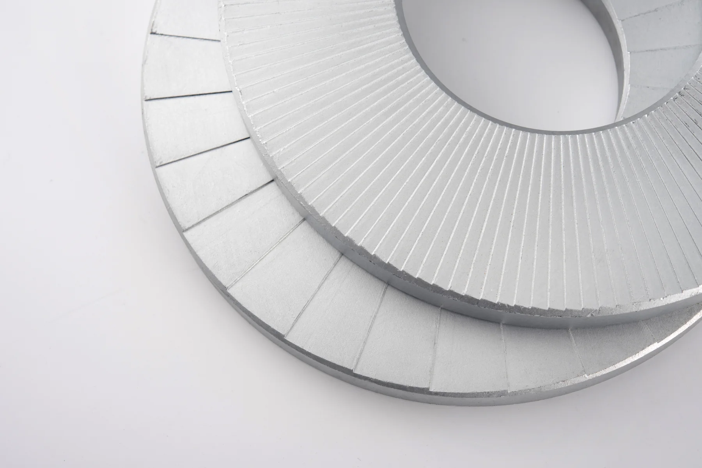
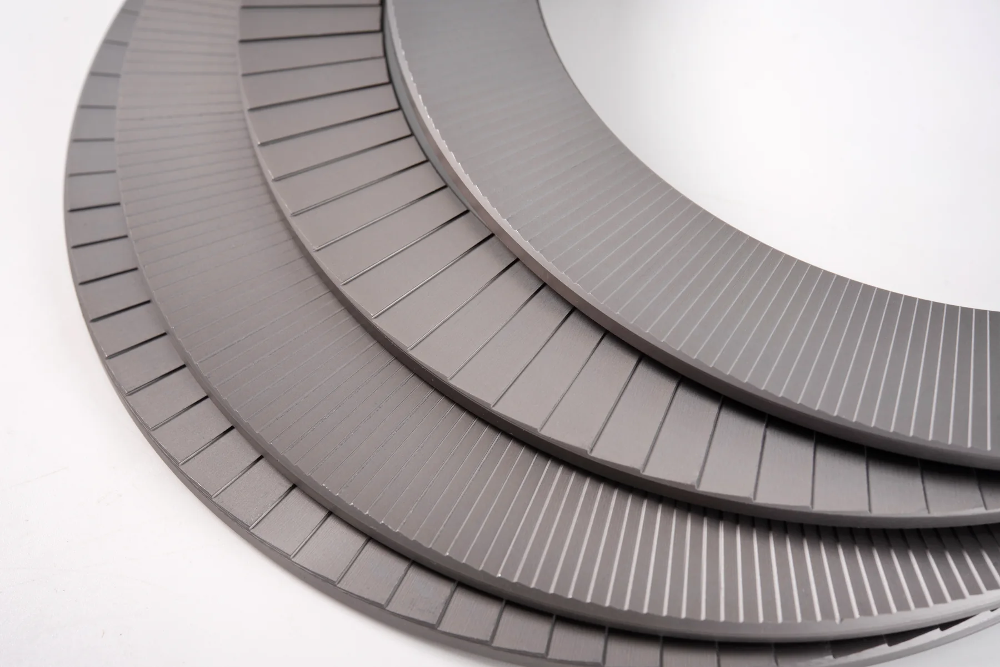
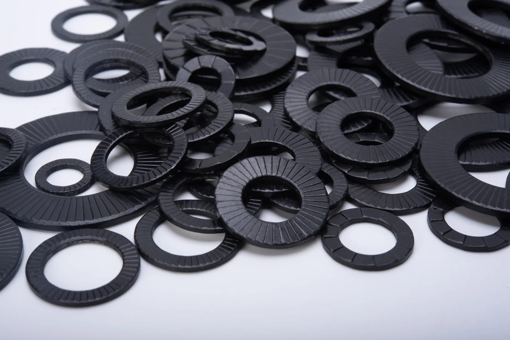
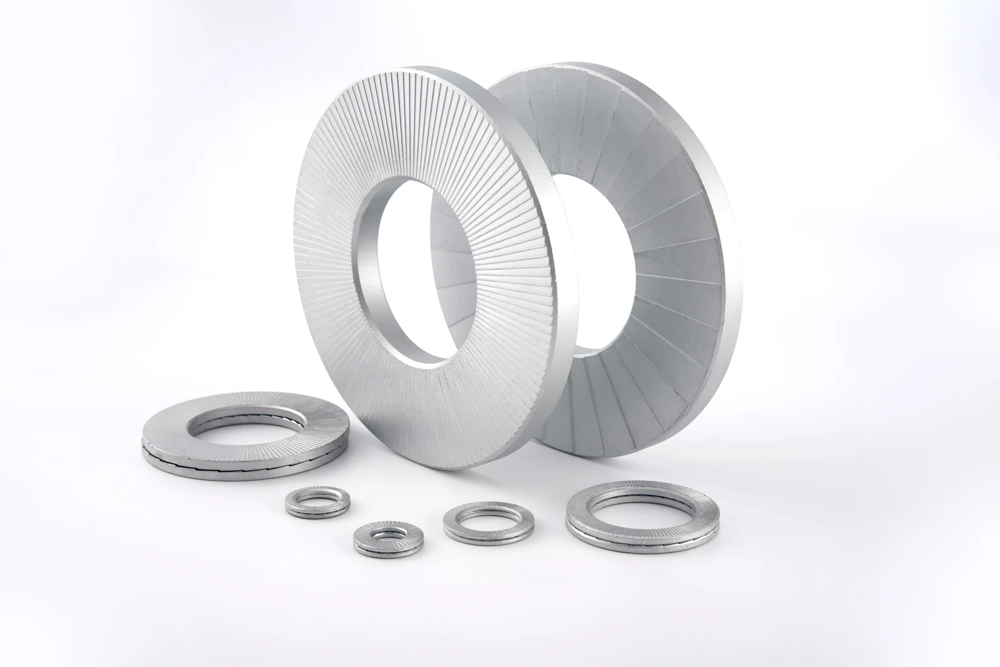
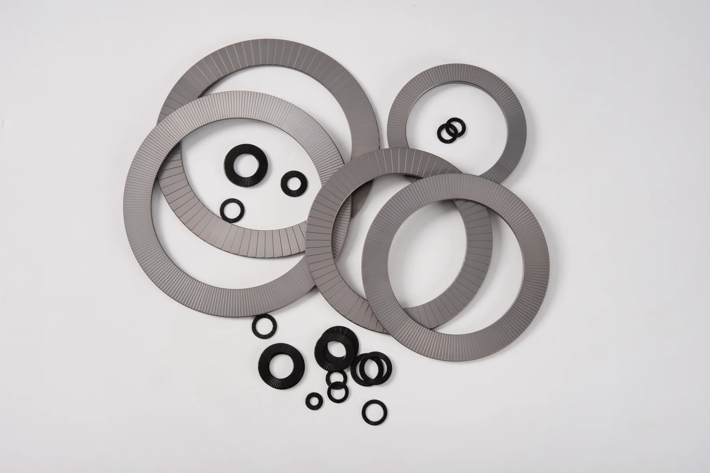
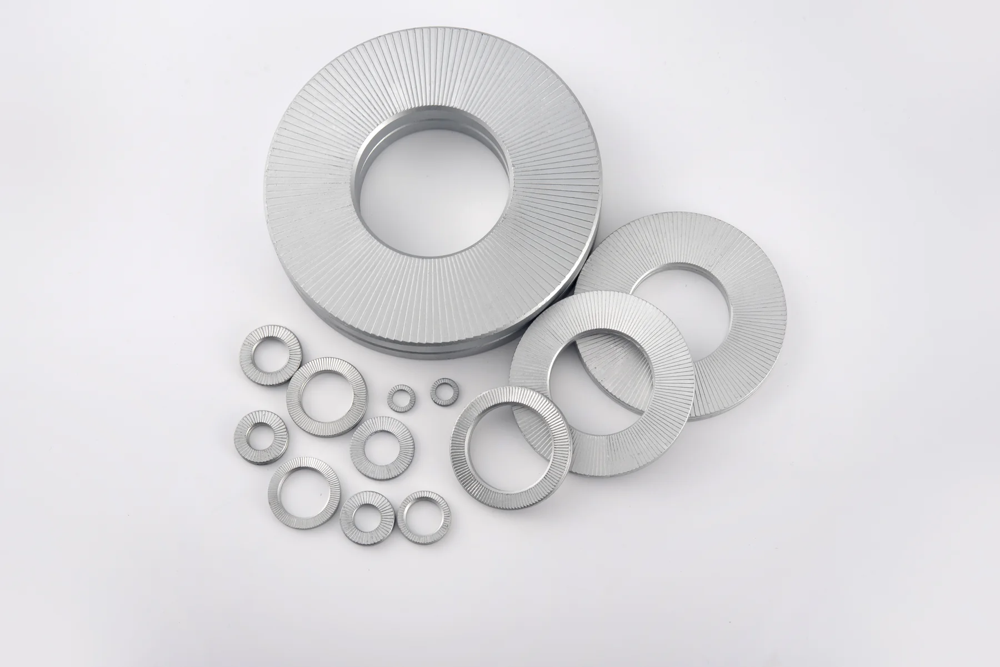

DIN 25201
用于评估螺栓连接在横向位移激励下的防松表现，具体夹紧力曲线以对应型号报告为准。
宇匠为存在螺栓松动、冲击振动或腐蚀风险的设备连接提供楔锁式机械防松方案，并依据工况协助确定规格、材质、表面处理与验证要求。
Core Product
两片垫圈以内侧楔形齿相对配合，外侧放射齿与连接面咬合。当连接出现松动趋势时，楔形面产生的轴向位移抵抗旋转松动。

YJ Wedge-locking Washer
适用于需要维持螺栓预紧力的高振动、动态载荷与频繁启停场景。标准型覆盖常用连接，SP 宽边型用于大孔、长圆孔或需要扩大承压面积的连接设计。
Evidence Before Claims
宣传资料显示宇匠产品已围绕横向振动、轨道交通振动、军工振动及型式试验项目形成检测文件。官网不以单一口号替代选型与报告。
用于评估螺栓连接在横向位移激励下的防松表现，具体夹紧力曲线以对应型号报告为准。
相关规格检测资料覆盖 YJ12、YJ14、YJ16、YJ20、YJ24 等型号。
资料中包含动车转向架振动测试文件，涉及碳钢与不锈钢等不同方案。
已有相应振动试验资料。项目引用前需核对适用产品、边界条件和报告版本。
Engineering Options
相同螺纹规格在载荷、温度、腐蚀介质、安装面和维护频次不同的情况下，可能需要完全不同的材料、外径和表面处理方案。
从常规 M3-M130、英制系列，到 SP 宽边和超大尺寸评估，结合孔型、接触面和螺栓等级确认。
可选碳钢、SUS304、SUS316、2205 双相不锈钢、254SMO、631 等，表面处理根据盐雾与环境要求确定。
根据项目需要确认尺寸、材质、硬度、镀层、盐雾、拆卸预紧力及振动等验证项目。
Product Reality
以下均为宇匠现有产品实拍素材。不同批次的颜色、表面纹理和尺寸比例会随材料及表面处理方案变化。





Applications
转向架、设备安装、车辆连接等承受持续振动与冲击的螺栓连接。
风电、水电、发电机组及管路支撑等需要维持预紧力的设备。
矿山、工程机械、破碎与钻探设备中的高冲击、高载荷连接。
兼顾振动防松与腐蚀环境，按介质和盐雾要求选择不锈钢或特种材料。
Quick Answers
双叠自锁垫圈通过两片楔形齿之间的几何关系形成机械防松；普通弹簧垫圈主要依靠弹性和摩擦。高振动工况下，应通过实际连接条件和振动测试选择方案。
通常可重复使用，但每次复用前都应检查是否变形、开裂、腐蚀或齿面损伤，并确认两片楔形齿仍正确相对。关键安全连接建议按项目规范执行。
一般工业环境可评估碳钢与适当表面处理；腐蚀、海洋或化工环境可评估 SUS304、SUS316、2205、254SMO 等。最终选择还需考虑配合面材料、温度和电化学腐蚀风险。
可以评估。请提供螺纹规格、内外径限制、厚度、材料、表面处理、载荷、数量和使用环境。特殊大尺寸的工艺、起订量和交期需单独确认。
提交螺纹规格、振动情况、安装面、材料、腐蚀环境和采购数量，宇匠将据此协助判断标准型、SP 型、材料与验证需求。